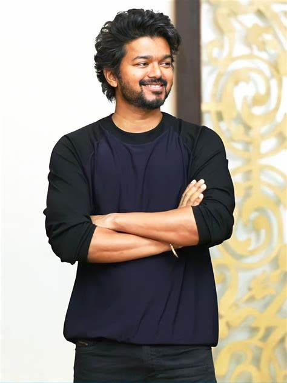

KOLLYWOOD ACTORS
1.BOX OFFICE KING
JOSEPH VIJAY
click hereChandrasekhar (born 22 June 1974), known professionally as Vijay, is an Indian actor and playback singer who works in Tamil cinema. In a career spanning over three decades, Vijay has acted in 68 films and is one of the most commercially successful actors in Tamil cinema with multiple films amongst the highest-grossing Tamil films of all time and is amongst the highest paid actors in India. He has won several awards as an actor. Referred to as "Thalapathy" (transl. commander), Vijay has a significant fan following. Born in Madras to director S. A. Chandrasekhar, Vijay made his debut as a child actor in the Tamil film Vetri (1984). After a few roles as a child actor in his father’s films, he played his first lead role in the film Naalaiya Theerpu (1992) at the age of 18. Vijay continued doing lead roles for the next few years with notable films amongst them included Poove Unakkaga, Love Today, Kadhalukku Mariyadhai, Thulladha Manamum Thullum and Kushi. In 1998, he was awarded Kalaimaamani by the Government of Tamil Nadu.